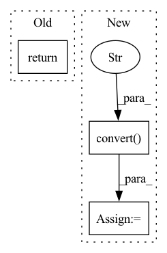

Pattern ID :23950

Before Change
f.write("%s %s %s %s %s %s\n" % (predicted_class, score[:6], str(int(left)), str(int(top)), str(int(right)),str(int(bottom))))
f.close()
return
frcnn = mAP_FRCNN()
image_ids = open("VOCdevkit/VOC2007/ImageSets/Main/test.txt").read().strip().split()
After Change
//-------------------------------------//
// 转换成RGB图片，可以用于灰度图预测。
//-------------------------------------//
image = image.convert("RGB")
image_shape = np.array(np.shape(image)[0:2])
old_width, old_height = image_shape[1], image_shape[0]
In pattern: SUPERPATTERN
Frequency: 4
Non-data size: 3
Instances
Fragment ID: 74510292
Project Name: bubbliiiing/faster-rcnn-pytorch
Commit Name: 5bc0197695911681ad666247efd2c792d03d721c
Time: 2021-05-11
Author: 47347516+bubbliiiing@users.noreply.github.com
File Name: get_dr_txt.py
M Class Name: mAP_FRCNN
N Class Name: mAP_FRCNN
M Method Name: detect_image(3)
N Method Name: detect_image(3)
M Parent Class: FRCNN
N Parent Class: FRCNN
M File Name: get_dr_txt.py
N File Name: get_dr_txt.py
M Start Line: 91
M End Line: 91
N Start Line: 46
N End Line: 95
'>
Before Change
f.write("%s %s %s %s %s %s\n" % (predicted_class, score[:6], str(int(left)), str(int(top)), str(int(right)),str(int(bottom))))
f.close()
return
centernet = mAP_CenterNet()
image_ids = open("VOCdevkit/VOC2007/ImageSets/Main/test.txt").read().strip().split()
After Change
//---------------------------------------------------------//
// 在这里将图像转换成RGB图像，防止灰度图在预测时报错。
//---------------------------------------------------------//
image = image.convert("RGB")
image_shape = np.array(np.shape(image)[0:2])
//---------------------------------------------------------//
'>
Fragment ID: 74510293
Project Name: bubbliiiing/centernet-pytorch
Commit Name: eb8266951b72fb5bf0aad113f36453821f481dc4
Time: 2021-05-18
Author: 47347516+bubbliiiing@users.noreply.github.com
File Name: get_dr_txt.py
M Class Name: mAP_CenterNet
N Class Name: mAP_CenterNet
M Method Name: detect_image(3)
N Method Name: detect_image(3)
M Parent Class: CenterNet
N Parent Class: CenterNet
M File Name: get_dr_txt.py
N File Name: get_dr_txt.py
M Start Line: 50
M End Line: 114
N Start Line: 43
N End Line: 113
'>
Before Change
image = image.resize((256, 256), resample=Image.BILINEAR)
label = torch.tensor(self.data.loc[idx, "diagnosis"])
return {
"image": self.transform(image),
"labels": label
}
After Change
fname = self.data.loc[idx, "id_code"]
img_name = os.path.join(
self.img_path, fname + ".png")
img = Image.open(img_name).convert("RGB")
img = self.transform(img)
label = torch.tensor(self.data.loc[idx, "diagnosis"])
'>
Fragment ID: 74510295
Project Name: tuttelikz/farabio
Commit Name: e0a58252c8a8bc4f5662faffc1a30e088b8082c9
Time: 2021-07-29
Author: s.askaruly@gmail.com
File Name: farabio/data/biodatasets.py
M Class Name: RetinopathyDataset
N Class Name: RetinopathyDataset
M Method Name: __getitem__(2)
N Method Name: __getitem__(2)
M Parent Class: Dataset
N Parent Class: Dataset
M File Name: farabio/data/biodatasets.py
N File Name: farabio/data/biodatasets.py
M Start Line: 611
M End Line: 620
N Start Line: 626
N End Line: 634
'>
Before Change
Returns:
the target mask
return Image.open(
os.path.join(self.root, self.base_folder, "output", id_ + "_m.png")
).convert("L")
After Change
filename = os.path.join(self.root, self.base_folder, "output", id_ + "_m.png")
with Image.open(filename) as img:
array = np.array(img.convert("L"))
tensor: Tensor = torch.from_numpy(array) // type: ignore[attr-defined]
return tensor
'>
Fragment ID: 74510296
Project Name: microsoft/torchgeo
Commit Name: 3f987ac83f4db8248da750356221b2c0d826acb4
Time: 2021-06-16
Author: ajstewart426@gmail.com
File Name: torchgeo/datasets/landcoverai.py
M Class Name: LandCoverAI
N Class Name: LandCoverAI
M Method Name: _load_target(2)
N Method Name: _load_target(2)
M Parent Class: VisionDataset
N Parent Class: VisionDataset
M File Name: torchgeo/datasets/landcoverai.py
N File Name: torchgeo/datasets/landcoverai.py
M Start Line: 141
M End Line: 143
N Start Line: 148
N End Line: 154